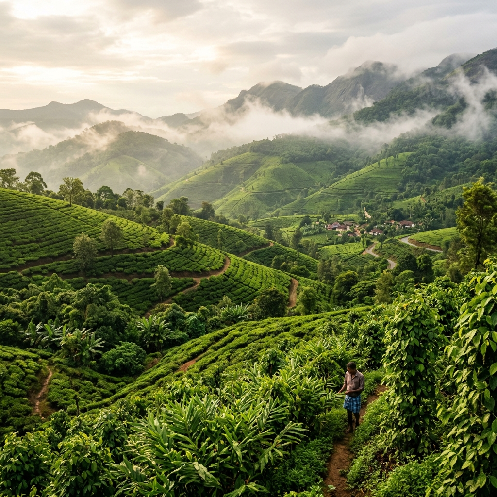
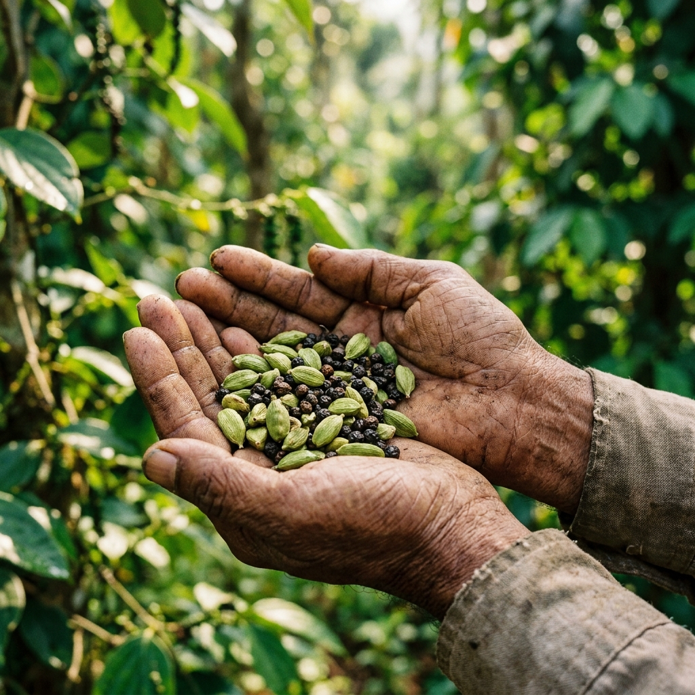
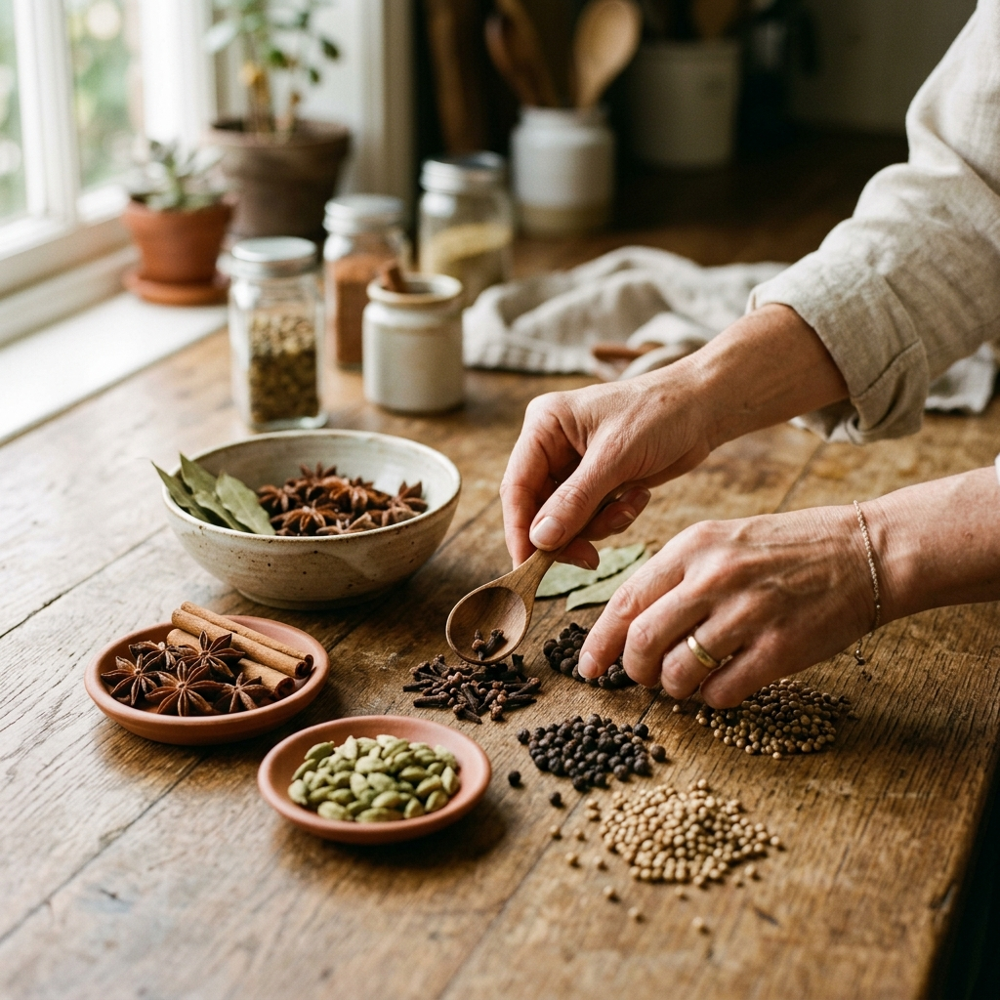
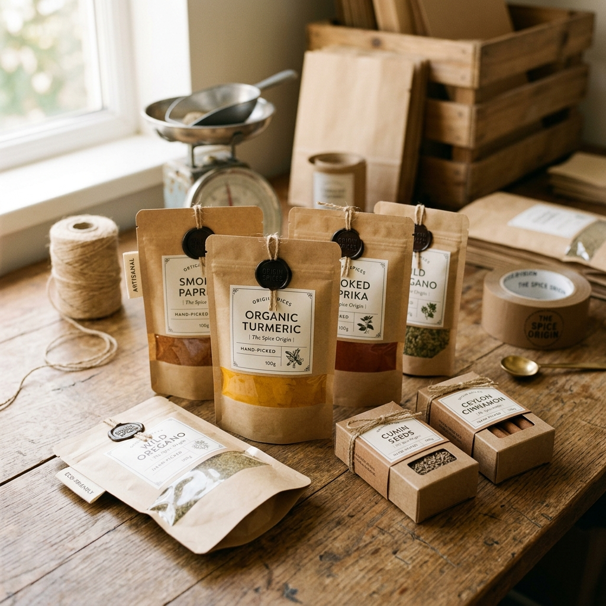

Single-origin spices from the Malabar hills.
Traceable to origin. Tested for purity. Shipped from Kerala.
Explore Our SpicesA trade heritage written in the soil.
0+
Years of Trade Heritage
"The Malabar coast is where the world's spice trade began, over two thousand years ago. Kerala's high ranges still grow its cardamom, pepper and ginger the old way — high elevation, slow curing, small holdings."
"Kassia Naturals was built by founders who chose to return to that source. Every spice we ship is single-origin Kerala, traceable to where it grew. Nothing blended, nothing borrowed."
Five spices. One origin.
Sourced lot by lot from Kerala's spice belt — each one singular in origin, graded by hand, and traceable to where it grew.
Crafted with integrity and transparency.
Single Origin
Every batch comes from one origin — Kerala's spice belt — never blended across regions.
Traceable
We know where each lot grew, and we can show you. Traceability over scale, always.
Tested for Purity
Every batch is tested before it ships. Every claim we make is one we can back.
Export Grade
Cleaned, graded and packed to international food-safety standards.
From Malabar soil to you.
Nurtured naturally
In the high ranges of Kerala, on small holdings, the traditional way.


Selected lot by lot
Selected lot by lot from Kerala's spice belt, with origin recorded for every batch.
Verified for quality
Hand-graded for size, colour and oil; batch-tested for purity.


Sealed at origin
Sealed at origin and shipped fresh — never warehoused for seasons.